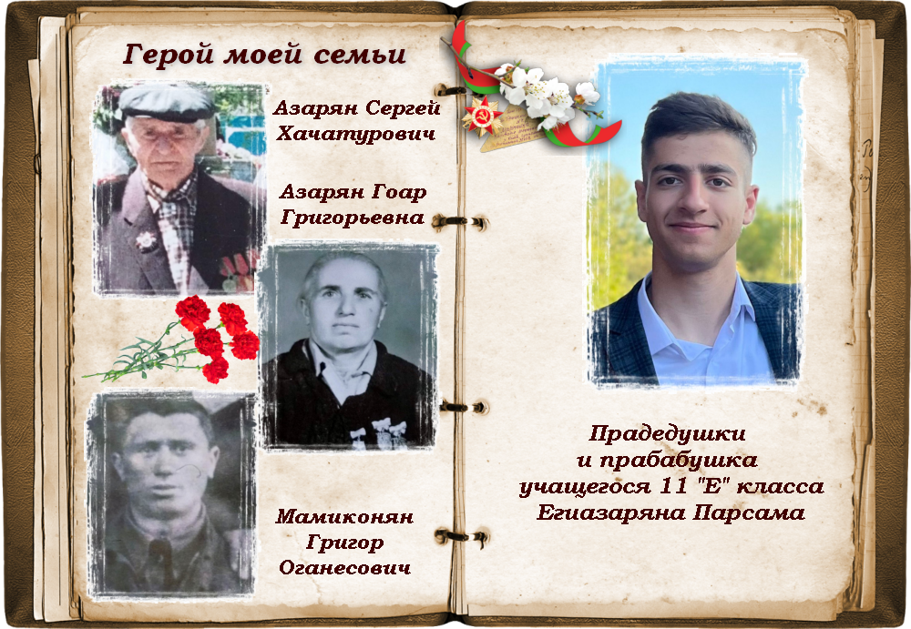

Республиканская акция «Герои моей семьи» проводится в учреждениях образования страны в апреле-мае 2024 года.
Организаторы республиканской акции: Министерство образования Республики Беларусь, структурные подразделения областных (Минского городского) исполнительных комитетов, осуществляющих государственно-властные полномочия в сфере образования.
Республиканская акция проводится с целью вовлечения обучающихся в поисковую и исследовательскую деятельность по изучению семейной истории.
В республиканской акции принимают участие обучающиеся, педагогические работники учреждений общего среднего образования, профессионально-технического и среднего специального образования, дополнительного образования детей и молодежи
В рамках акции обучающиеся исследуют историю своей семьи, судьбы родных, принимавших участие в Великой Отечественной войне на фронтах и в тылу, или являющихся очевидцами военных событий.
По итогам поисковой и исследовательской работы обучающимися создается тематический плакат.
Также участниками акции проводятся культурно-просветительские мероприятия по увековечению памяти о родственниках – героях Великой Отечественной войны.
Заключительный этап акции предполагает участие в республиканском патриотическом проекте «Беларусь помнит», в мероприятиях, приуроченных к празднованию Дня Победы, в ходе которых организуются шествия с портретами героев войны.

